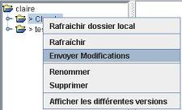
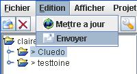

Se positionner sur le répertoire contenant les fichiers à mettre à jour, ou sur le fichier voulu.
Faire un clic droit et choisir le menu « Envoyer Modifications ».

Ou dans le menu « Edition », choisir le menu « Envoyer ».

Indiquer les raisons de la mise à jour du fichier est facultatif.
|
|